Mach-O 文件结构详解中分析了 Mach-O 的构成，介绍了部分
Segment和Section的结构和其作用，相当于是静态分析。这篇文章将分析 Mach-O 加载时动态链接过程，加深自己的理解。
启动过程
iOS App 的启动过程大概分为这几个步骤：
- 内核初始化部分，负责将 App 的 Mach-O Header 映射到内存中进行处理然后调用
dyld dyld负责将 App 处理为一个可以运行的状态，通过添加DYLD_PRINT_STATISTICS环境变量可以查看各个阶段，包括：- 加载 Mach-O 的依赖库。所依赖的库信息在 Mach-O 的
Load Commands中可以看到 - Fix-ups，地址修正。当所依赖的动态链接库加载完成后，它们彼此间独立，该阶段负责将它们绑定起来。其中 Fix-ups 包括两部分：
Rebasing：将 App 可行文件中指向内部的指针进行指向修正Binding：修复 App 可执行文件中指向外部的指针
- ObjC 环境配置。该阶段进行
Class、Category的注册和SEL的分配。 - initializer 。
+load在该阶段执行
- 加载 Mach-O 的依赖库。所依赖的库信息在 Mach-O 的
- 进入
main()和UIApplicationDelegate回调状态执行阶段，展示自定义 UI
符号绑定（Binding）
Mach-O 加载时，符号分成了懒加载符号和非懒加载符号，非懒加载符号在 dyld 加载 Mach-O 时就会绑定真实地址；对于来自于系统动态链接库或者独立于 Main Execute Binary（Mach-O） 之外的懒加载符号，只在在它们第一次被调用时才会绑定真实地址，后续调用时将直接使用真实地址。
Demo 二进制 HelloWorld 中调用了来自于系统动态库的 NSLog，下面将通过该二进制及其源码来分析符号的绑定过程。
下面会先使用 MachOView 静态查看相关的 Section 和 Segment 静态分析，然后单步动态调试验证。
1. __TEXT,__stubs
__TEXT 段存放的是代码指令，其中 __TEXT,__stubs 存放的是当前 Image（镜像） 外部符号的桩点。下图是 HelloWorld 的 __TEXT,__stubs 部分：
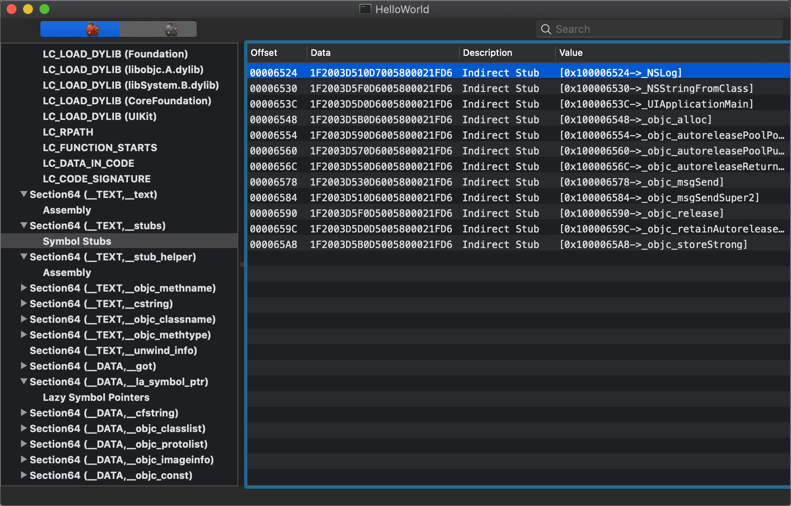
其中 Data 字段是机器码，可以按照 AArch64 指令集的编码规则[1]翻译成汇编代码，使用 Hopper Disassembler 打开二进制（注意不要勾选 Mach-O AArch64 Options 的 Resolve Lazy Bindings 选项），定位到
NSLog：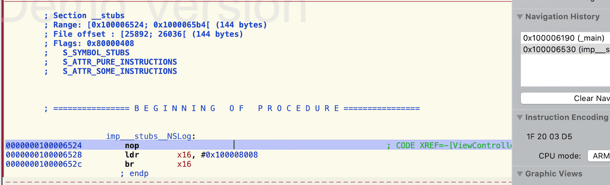
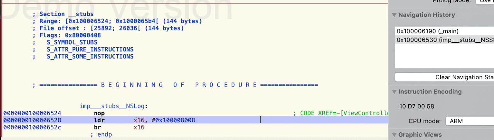
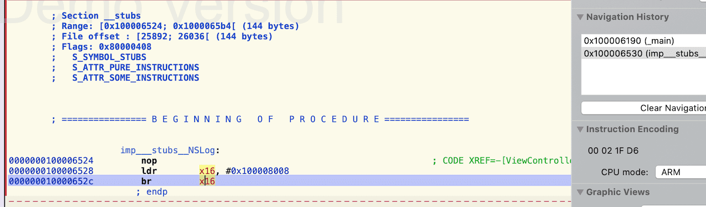
Hopper 右边 Instruction Encoding 区域的 16 进制串对应当前选中的汇编命令，三条命令组合起来的 16 进制串
1F2003D510D7005800021FD6 刚好就是 MachOView 中 NSLog 的 Data 值。这三行指令让跳转到 0x100008008 去执行，0x100008008 减去 VM((LC_SEGMENT_64),__PAGEZERO.VMSize) 的初始偏移值：0x100000000(4294967296) ，得到 0x000008008，它对应 Mach-O 中 __DATA.__la_symbol_ptr 的起始位置。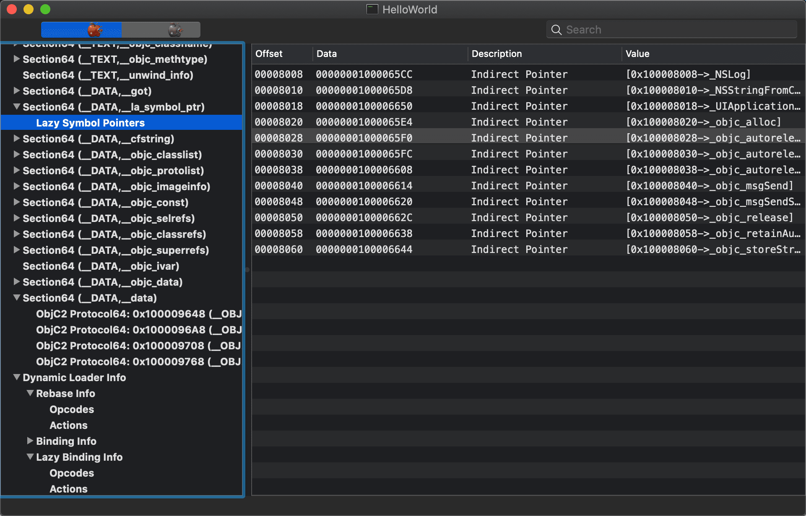
由于
__TEXT 是只读的，为了能够在 Mach-O 经过了 ASLR 和 PIE 后仍然能够正确地定位外部符号的地址，完成动态链接，__TEXT,__stubs 充当了跳板作用，当有人要调用 stub 符号时，它便将调用流程转向了一个可写区域 __DATA.__la_symbol_ptr，而该区域将存放真正的符号地址2. __DATA.__la_symbol_ptr
__la_symbol_ptr 存放 lazy-binding 的函数指针信息，在 Hopper 中双击 NSLog 的地址 0x100008008，将会跳转到：
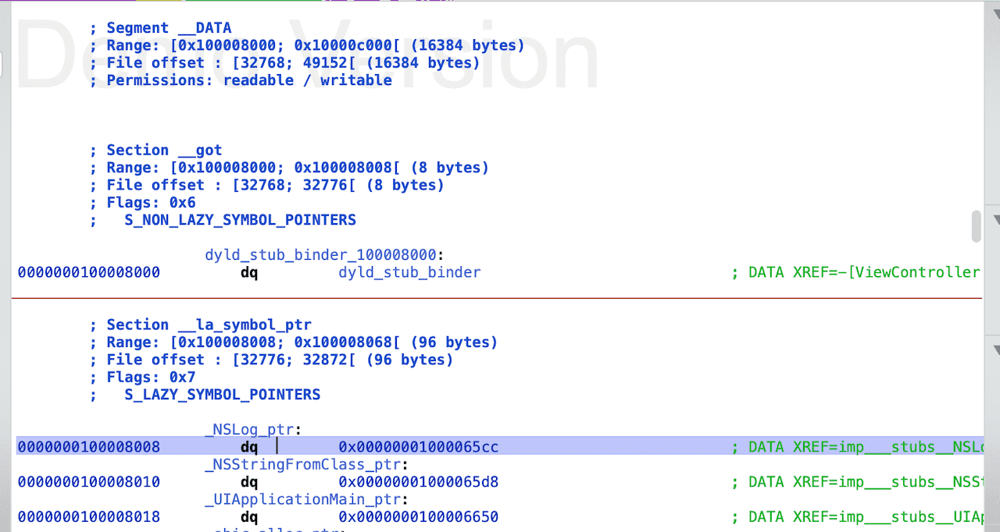
是一个交叉引用地址，指向
0x00000001000065cc，而该地址落在 __TEXT.__stub_helper 中，且该处的 Data 为 50000018：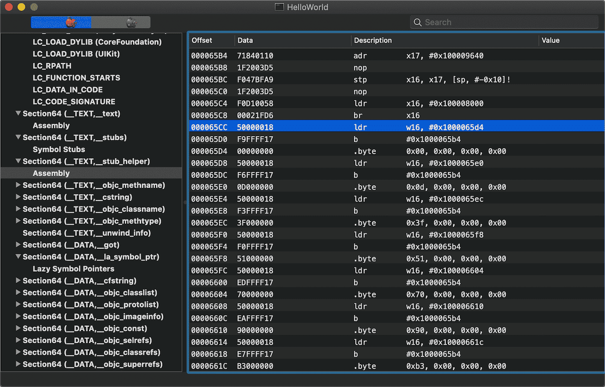
对应的汇编代码会将流程转向
__TEXT.__stub_helper 的头部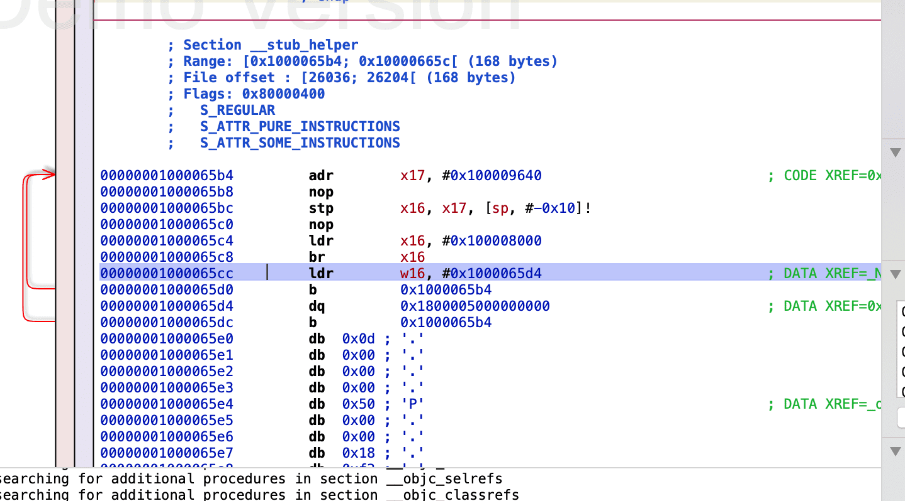
3. __TEXT.__stub_helper
__TEXT.__stub_helper 区域是一段汇编代码，这段代码不仅会找到要调用符号真正的地址并跳转到地址执行，而且会将该地址写回对应的 __DATA.__la_symbol_ptr，实现“缓存”。
NSLog 的绑定过程
新建一个 demo ，主要代码如下：
- (void)viewDidLoad { [super viewDidLoad]; // Do any additional setup after loading the view. NSLog(@"1"); NSLog(@"2"); }在两个
NSLog处分别下断点，设置 Debug Workflow 为 Always Show Disassembly，然后选择 arm64 真机运行，如图：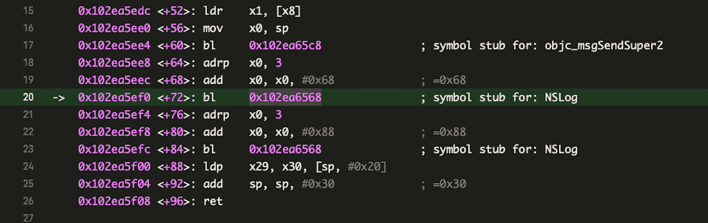
Xcode 提示当前位置为symbol stub for NSLog得到 ALSR 偏移：
0x102ea0000(lldb) image list HelloWorld [ 0] 1F21C492-D5E8-3B0B-B239-E0E691E7D64F 0x0000000102ea0000 /Users/chenzheng/Library/Developer/Xcode/DerivedData/MachOExploration-gyejyvbqloguepctiipvnexsjqsv/Build/Products/Debug-iphoneos/HelloWorld.app/HelloWorld执行 lldb step into 命令
stepi，如下：HelloWorld`NSLog: -> 0x102ea6568 <+0>: nop 0x102ea656c <+4>: ldr x16, #0x1a9c ; (void *)0x0000000102ea6610 0x102ea6570 <+8>: br x16按住 Control 键点 Step Over 达到
ldr所在行，该行取 (pc + 0x1a9c) 处的地址（经过计算为0x0000000102ea8008），存入x16，该地址指向__DATA.__la_symbol_ptr中偏移为0x0的位置，由 MachOView 可知该处即是_NSLog的位置，对应，如下图：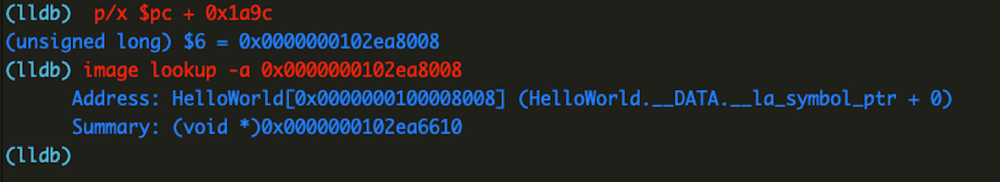
真实地址的所在
- 在
0x0000000102ea6610处下断点:br set -a 0x0000000102ea6610，然后继续执行，如下：-> 0x102ea6610: ldr w16, 0x102ea6618 0x102ea6614: b 0x102ea65f8 0x102ea6618: udf #0x0 0x102ea661c: ldr w16, 0x102ea6624 0x102ea6620: b 0x102ea65f8 0x102ea6624: udf #0xd 0x102ea6628: ldr w16, 0x102ea6630 0x102ea662c: b 0x102ea65f80x102ea6610处的ldr指令实际是取文件0x6618处指示的立即数0x00000000存入x16中，这个0x00000000是一个偏移值，描述的是距离Dynamic Loader Info 中 Lazy Binding Info 起始地址的偏移，从下图可以看出，偏移后位置为0x0000c2a8 + 0x00000000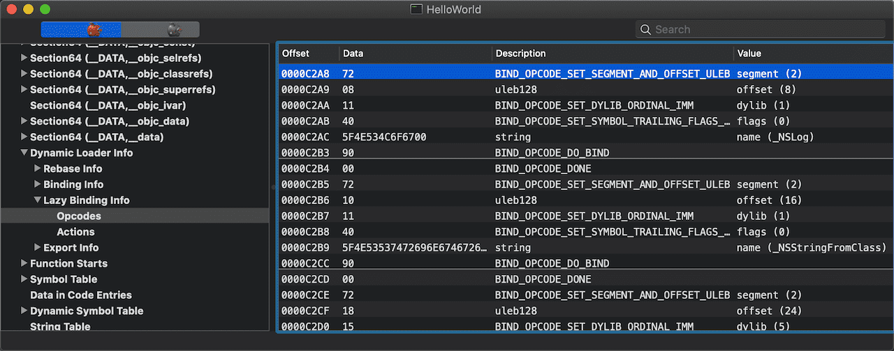
其中dylib(1)表示该符号处于当前文件第三个 LC_LOAD_DYLIB 中，即libSystem.B.dylib中；segment(2) 和 offset(8) 表示将找到的真实地址写入当前文件架构的第 2 个 segment 偏移为 8 的地方。从 MachOView 中可以看到，第二个 segment 即为 __DATA，偏移 8 的位置刚好是_NSLog的符号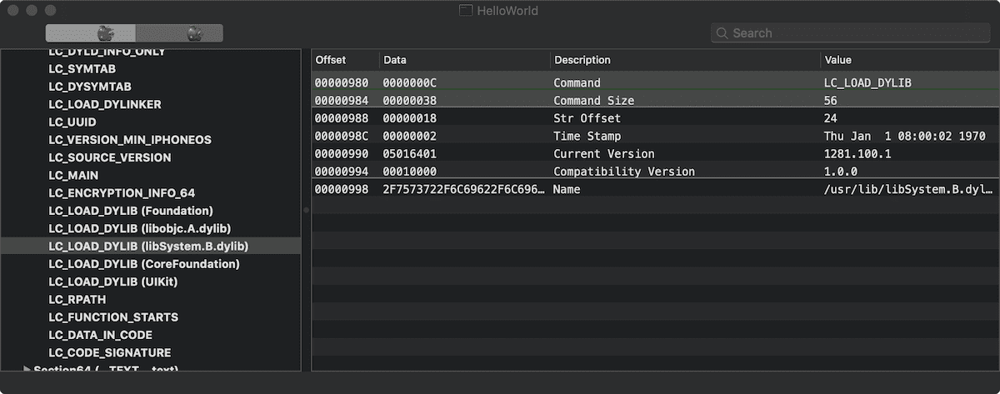
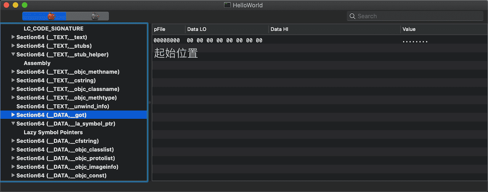
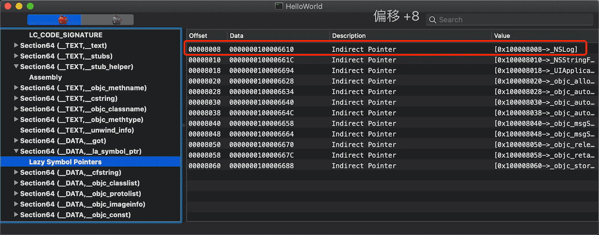
- 在
绑定与执行
设置断点br set -a 0x102ea65f8继续执行，如下：0x102ea65f8: adr x17, #0x2fb8 ; _dyld_private 0x102ea65fc: nop 0x102ea6600: stp x16, x17, [sp, #-0x10]! 0x102ea6604: nop 0x102ea6608: ldr x16, #0x19f8 ; (void *)0x00000001b51bc80c: dyld_stub_binder 0x102ea660c: br x16 0x102ea6610: ldr w16, 0x102ea6618 0x102ea6614: b 0x102ea65f8dyld_stub_binder和真实地址查找有关，在此处下断点：br set -a 0x00000001b51bc80c后继续执行，进入到dyld内部，单步执行到_dyld_fast_stub_entry所在行，如图：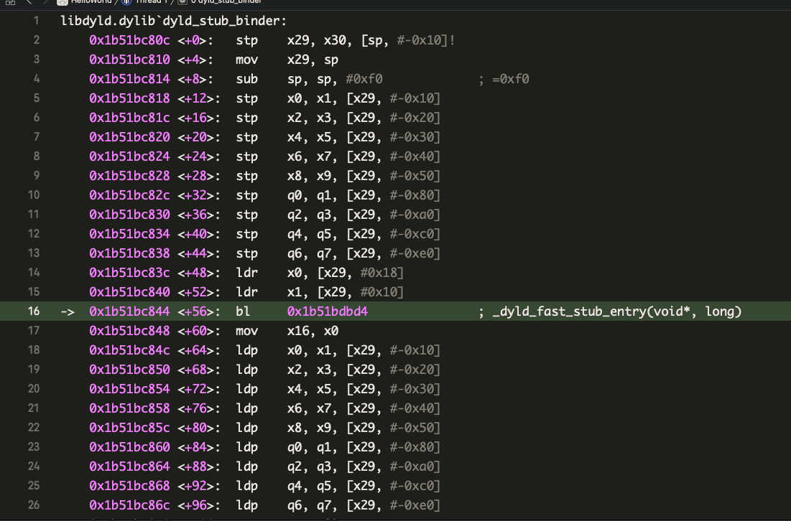
在这一行的前两行:
0x1b51bc83c <+48>: ldr x0, [x29, #0x18] 0x1b51bc840 <+52>: ldr x1, [x29, #0x10]将
x29分别偏移0x18和0x10处的地址对应的值取出来放到x0、x1，作为参数传给了_dyld_fast_stub_entry，_dyld_fast_stub_entry中将完成符号地址的查找。x1中就是上述提到的偏移量, 而x0是一个_dyld_private指针:(lldb) register read x1 x1 = 0x0000000000000000 (lldb) register read x0 x0 = 0x0000000102ea95b0 _dyld_private_dyld_fast_stub_entry
这是dyld中的一个函数，我们下载一套和系统中正在使用的dyld最接近的源码，尝试分析其功能。
在 lldb 中执行image list dyld，得到dyld的路径/Users/chenzheng/Library/Developer/Xcode/iOS DeviceSupport/12.4 (16G77)/Symbols/usr/lib/dyld，将其拖入到 MachOView 中，定位到LC_SOURCE_VERSION，看到 Version 为 650.3.4，可惜 dyld 源码页面并没有找到匹配的版本，所以下载了 655 版本。打开 dyld 工程后定位到_dyld_fast_stub_entry:#if __i386__ || __x86_64__ || __arm__ || __arm64__ __attribute__((visibility("hidden"))) void* _dyld_fast_stub_entry(void* loadercache, long lazyinfo) { DYLD_NO_LOCK_THIS_BLOCK; static void* (*p)(void*, long) = NULL; if(p == NULL) // 如果缓存位置为空，从全局的 `函数名-函数指针` 数组中找到对应的 // 函数指针 ((void*)dyld::fastBindLazySymbol)，然后将形参透传过去并执行 // 然后返回执行的结果，此结果应该就是符号对应的真实地址 _dyld_func_lookup("__dyld_fast_stub_entry", (void**)&p); return p(loadercache, lazyinfo); } #endif好奇一下
dyld::fastBindLazySymbol的实现：uintptr_t fastBindLazySymbol(ImageLoader** imageLoaderCache, \ uintptr_t lazyBindingInfoOffset) { uintptr_t result = 0; // get image if ( *imageLoaderCache == NULL ) { // save in cache *imageLoaderCache = dyld::findMappedRange((uintptr_t)imageLoaderCache); if ( *imageLoaderCache == NULL ) { #if SUPPORT_ACCELERATE_TABLES if ( sAllCacheImagesProxy != NULL ) { const mach_header* mh; const char* path; unsigned index; if ( sAllCacheImagesProxy->addressInCache(imageLoaderCache, &mh, \ &path, &index) ) { result = sAllCacheImagesProxy->bindLazy(lazyBindingInfoOffset, \ gLinkContext, mh, index); if ( result == 0 ) { halt("dyld: lazy symbol binding failed for image in dyld shared\n"); } return result; } } #endif const char* message = "fast lazy binding from unknown image"; dyld::log("dyld: %s\n", message); halt(message); } } // bind lazy pointer and return it try { result = (*imageLoaderCache)->doBindFastLazySymbol( \ (uint32_t)lazyBindingInfoOffset, gLinkContext, \ (dyld::gLibSystemHelpers != NULL) ? \ dyld::gLibSystemHelpers->acquireGlobalDyldLock : NULL, (dyld::gLibSystemHelpers != NULL) ? \ dyld::gLibSystemHelpers->releaseGlobalDyldLock : NULL); } catch (const char* message) { dyld::log("dyld: lazy symbol binding failed: %s\n", message); halt(message); } // return target address to glue which jumps to it with real parameters restored return result; }大致是根据传入的
lazyBindingInfoOffset和gLinkContext找到真实的地址，然后返回。再单步一次执行完
_dyld_fast_stub_entry，得到其返回值（存在在x0中），打印 x0 ，得到的0x00000001b61d7620正是NSLog在 Foundation 框架中的地址：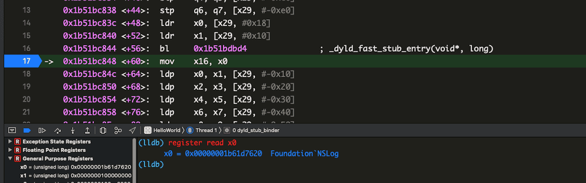
第二次执行
单步执行，应该会停在第二个NSLog的地方：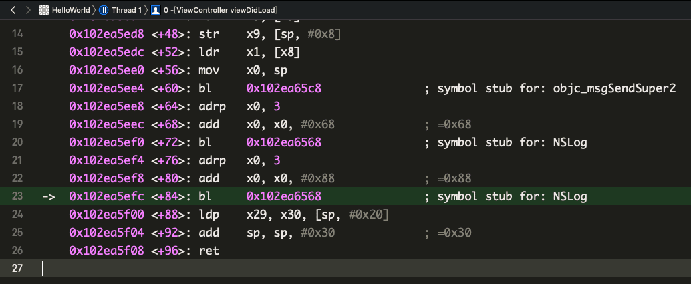
设置断点br set -a 0x102ea6568，然后执行，在断点位置已经有提示，存入x16的地址已经是上述NSLog的地址0x00000001b61d7620，经过验证，__DATA.__la_symbol_ptr偏移0x00处的值已经被赋值为了0x00000001b61d7620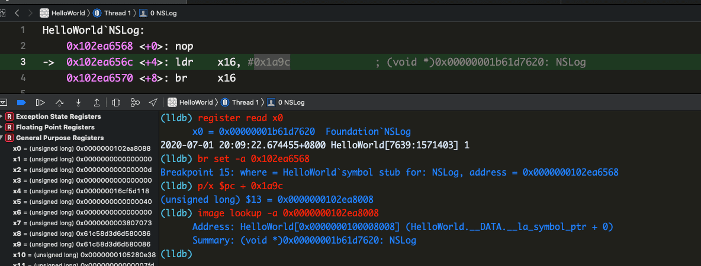
dyld_stub_binder？
__TEXT.__stub_helper 中本是用来帮助处理符号的延迟绑定的一段代码，里面引用了同样不在当前 Mach-O 中的符号 dyld_stub_binder，好像有问题🤔
其实 dyld_stub_binder 存在于 __DATA.__got 区域，是非延迟绑定的符号，它在 Mach-O 加载完成后立即可用，可以用来辅助定位延迟绑定符号的地址。
流程总结
上述 viewDidLoad 对应的汇编代码:
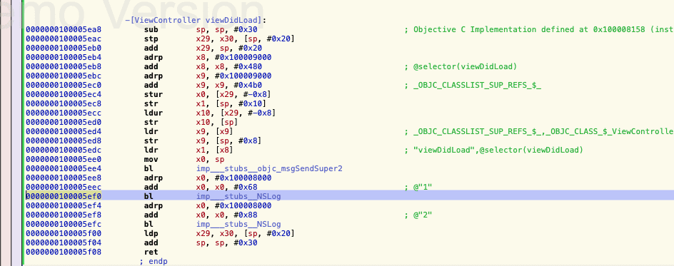
第一次
bl imp_stubs_NSLog 时将跳转到 NSLog 的桩点，这一段汇编代码将从 __DATA.__la_symbol_ptr 中读取地址并跳转执行，而 __DATA.__la_symbol_ptr 中此时的地址指向 __TEXT.__stub_helper 并最终被引导到 __TEXT.__stub_helper 的头部执行；在 __TEXT.__stub_helper 中调用非延迟绑定的 dyld_stub_binder ，在其中通过 _dyld_fast_stub_entry 拿到真实的地址，调用 _dyld_fast_stub_entry 时传入了从 Dynamic Loader Info 中取到的当前待绑定符号的 Lazy Binding Info ，以便在找到真实地址后能够写回 __DATA.__la_symbol_ptr 中，下次 bl imp_stubs_NSLog 时将直接调用延迟绑定技术很好地处理好了代码复用和使用效率问题，整个过程只有在自己亲自动手跟进一番才会有深刻的理解
本博客所有文章除特别声明外，均采用 CC BY-SA 3.0协议 。转载请注明出处！